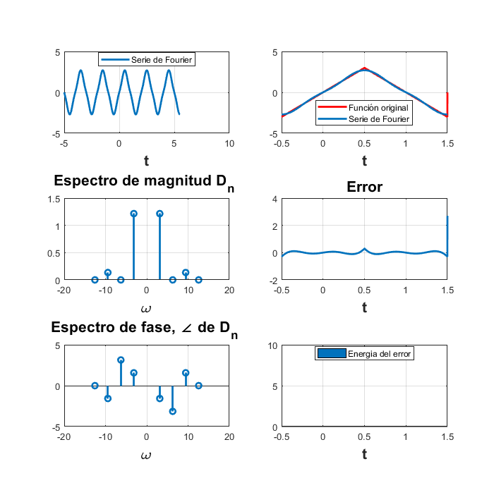

Práctica 5: Series de Fourier
Autor:
Acosta Villa Cristian Abraham
Córdova Fernández Karla Lilia
SEÑALES Y SISTEMAS, Grupo 2TV1
Contents
Objetivos de la práctica.
- Realizar gráficas de series de Fourier exponenciales y trigonométricas en tiempo continuo.
- Manipulación de instrucciones en MATLAB. Cálculo númerico de los coeficientes de Fourier.
Introducción.
- Coeficientes de Fourier exponencial compleja.
Las series de Fourier son series de términos coseno y seno y surgen en la tarea práctica de representar funciones periódicas generales. Como aplicación constituyen una herramienta muy importante en la solución de problemas en los que intervienen ecuaciones diferenciales ordinarias y parciales. Las series de Fourier pueden adoptar una forma diferente de reescribirse sin utilizar senos y cosenos, en su lugar, utilizando la exponencial compleja. La definición de una serie de Fourier exponencial compleja se da como:
Donde es el coeficiente de Fourier y está dado como:
Donde (un período) y es la señal a representar en forma de serie.
- APROXIMACIÓN NUMÉRICA.
Cuando se tiene un intervalo de muestreo  de la señal, puede ser interpretado también:
de la señal, puede ser interpretado también:
Donde (número de muestras en un período), y representa la kT-ésima muestra de .
Cómo T tiende a cero y este caso es imposible en la vida práctica y en su cálculo numéricamente en Software, el límite puede omitirse y simplificarse la ecuación del coeficiente de Fourier como:
- Teorema fundamental del cálculo.
La integración numérica definida como es el área determinada por entre el intervalo que va desde el valor a hasta el valor b. Para resolver la integración numérica utilizando el teorema fundamental del cálculo, se tienen algunas condiciones:
- f(x) debe ser integrable (toda función contínua es integrable en un intervalo).
 .
.
Por lo tanto:
Siendo la antiderivada. Calcular la antiderivada puede ser difícil o incluso imposible. Uno de los métodos posibles aplicables para hallar la antiderivada de una función es mediante la aproximación con polinomios, eligiéndose el más parecido .
Para el cáculo del coeficiente , utilizando el teorema fundamental del cálculo:
Donde representa a la antiderivada del producto , una vez comprobado que es integrable.
- Algoritmo de Trapecio. El algoritmo de Trapecio o regla de Trapecio se trata de un método para calcular aproximaciones numéricas de integrales definidas.
Para el polinomio interpolante de primer grado se obtiene.
$$ A = \infty_{a}^{b}f(x)dx = $
donde:
$$ f_{1} = f(a) + \frac{f(b)-f(a)}{b-a}(x-a)
El área bajo la recta es una aproximación de la integral . Luego se tiene que la regla de trapecio está dado por:
El nombre de regla de trapecio se debe a la interpretación geométrica que se hace de la fórmula. Cuando el polinomio interpolante de grado uno, la gráfica representa una línea recta en el intervalo que es el área del trapecio que se forma.
Funciones utilizadas en la práctica.
Función sfc.m para la graficación de la señal, la serie de Fourier (exponencial compleja), el error, la energía del error y los espectros de magnitud y fase.
function sfc(t0,tf,dn,d0,f,armo,a,b) w0=2*pi/(tf-t0); sf=d0; t=a:0.0001:b; for n=1:armo sf=sf+dn(-n)*exp(w0*-n*t*j)+dn(n)*exp(w0*n*t*j); end hFig = figure; set(hFig, 'Position', [0 0 700 700]) subplot(3,2,1) plot(t,sf,'LineWidth',2) grid on legend('Serie de Fourier','Location','Best') xlabel('t','FontWeight','bold','FontSize',16) sf=d0; t1=t0:0.0001:tf; for n=1:armo sf=sf+dn(-n)*exp(w0*-n*t1*j)+dn(n)*exp(w0*n*t1*j); end subplot(3,2,2) plot(t1,f(t1),'r','LineWidth',2) grid on hold on plot(t1,sf,'LineWidth',2) legend('Función original','Serie de Fourier ','Location','Best') xlabel('t','FontWeight','bold','FontSize',16) nn=-armo:armo; axis auto subplot(3,2,4) e=f(t1)-sf; plot(t1,e,'LineWidth',2) title('Error','FontWeight','bold','FontSize',16) xlabel('t','FontWeight','bold','FontSize',16) axis auto grid on subplot(3,2,6) e=f(t1)-sf; area(t1,e.^2) legend('Energia del error','Location','Best') xlabel('t','FontWeight','bold','FontSize',16) axis auto grid on absdn=zeros(1,length(nn)); cont=1; for i =-armo:armo if i==0 absdn(cont)=d0; end absdn(cont)=dn(i); cont=cont+1; end subplot(3,2,3) stem(w0*nn,abs(absdn),'LineWidth',2) title('Espectro de magnitud D_n ','FontWeight','bold','FontSize',16) xlabel('\omega','FontWeight','bold','FontSize',16) grid on subplot(3,2,5) % % stem(w0*nn,angle(absdn),'LineWidth',2) % % title('Espectro de fase, \angle de D_n ','FontWeight','bold','FontSize',16) % % xlabel('\omega','FontWeight','bold','FontSize',16) grid on end
Función sft.m para la graficación de la señal, la serie de Fourier (trigonométrica), el error, la energía del error y los espectros de magnitud y fase.
function sft(t0,tf,ao,an,bn,f,armo,a,b) wo=2*pi/(tf-t0); sf=ao; t=-tf:0.0001:t0; for n=1:armo sf=sf+an(n)*cos(wo*n*t)+bn(n)*sin(wo*n*t); end hFig = figure; set(hFig, 'Position', [-100 0 700 700]) subplot(3,2,1) plot(t,sf,'LineWidth',2) grid on legend('Serie de Fourier Trigo','Location','Best') xlabel('t','FontWeight','bold','FontSize',16) sf=ao; t1=t0:0.0001:tf; for n=1:armo sf=sf+an(n)*cos(wo*n*t)+bn(n)*sin(wo*n*t); end subplot(3,2,2) plot(t1,f(t1),'r','LineWidth',2) grid on hold on plot(t1,sf,'LineWidth',2) legend('Función original','Serie de Fourier ','Location','Best') xlabel('t','FontWeight','bold','FontSize',16) nn=-armo:armo; axis auto subplot(3,2,4) e=f(t1)-sf; plot(t1,e,'LineWidth',2) title('Error','FontWeight','bold','FontSize',16) xlabel('t','FontWeight','bold','FontSize',16) axis auto grid on subplot(3,2,6) e=f(t1)-sf; area(t1,e.^2) legend('Energia del error','Location','Best') xlabel('t','FontWeight','bold','FontSize',16) axis auto grid on n = 1:armo; a_n(1) = 0.504; a_n(n+1) = 0.504*2./(1+16*n.^2); b_n(1) = 0; b_n(n+1) = 0.504*8*n./(1+16*n.^2); c_n(1) = a_n(1); c_n(n+1) = sqrt (a_n(n+1).^2+b_n(n+1).^2); theta_n(1) = 0; theta_n(n+1) = atan2(-b_n(n+1),a_n(n+1)); n = [0,n]; subplot(3,2,3) stem(c_n,'LineWidth',2); title('Espectro de magnitud D_n ','FontWeight','bold','FontSize',16) xlabel('\omega','FontWeight','bold','FontSize',16) grid on subplot(3,2,5) % % stem(n,theta_n,'LineWidth',2); title('Espectro de fase, \angle de D_n ','FontWeight','bold','FontSize',16) % % xlabel('\omega','FontWeight','bold','FontSize',16) grid on end
Función sfd.m para la serie de Fourier (exponencial compleja), y los espectros de magnitud y fase. (Utilizada para el ejemplo 8.7)
function sfd(t0,tf,dn,d0,f,armo,a,b) w0=2*pi/(tf-t0); sf=d0; t=a:0.0001:b; for n=1:armo sf=sf+dn(-n)*exp(w0*-n*t*j)+dn(n)*exp(w0*n*t*j); end hFig = figure; set(hFig, 'Position', [0 0 900 900]) subplot(2,2,1) plot(t,sf,'LineWidth',2) grid on legend('Serie de Fourier','Location','Best') xlabel('t','FontWeight','bold','FontSize',16) sf=d0; t1=t0:0.0001:tf; for n=1:armo sf=sf+dn(-n)*exp(w0*-n*t1*j)+dn(n)*exp(w0*n*t1*j); end nn=-armo:armo; absdn=zeros(1,length(nn)); cont=1; for i =-armo:armo if i==0 absdn(cont)=d0; end absdn(cont)=dn(i); cont=cont+1; end subplot(2,2,2) stem(w0*nn,abs(absdn),'LineWidth',2) title('Espectro de magnitud D_n ','FontWeight','bold','FontSize',16) xlabel('\omega','FontWeight','bold','FontSize',16) grid on subplot(2,2,3) % % stem(w0*nn,angle(absdn),'LineWidth',2) % % title('Espectro de fase, \angle de D_n ','FontWeight','bold','FontSize',16) % % xlabel('\omega','FontWeight','bold','FontSize',16) grid on end
Ejemplo 6.1
Encontrar la serie de Fourier trigonométrica para la señal periódica .
syms t n t1=linspace(-6,6,1000); x=@(t) (exp(-t/2).*(t>0 & t<pi)); T = pi; w0=2*pi/(T); figure plot(t1,x(t1+2*T)+x(t1+T)+x(t1)+x(t1-T)+x(t1-2*T),'g','LineWidth',2); grid on xlabel('t','FontWeight','bold','FontSize',16); title('x(t) = e^{-t/2}','FontWeight','bold','FontSize',16)
Se aplican las definiciones de y para calcular los coeficientes de Fourier:
Do=0;
Do=int(exp(-t/2),'t',0,pi);
Do=simplify(Do/T);
Dn=0;
Dn = int(exp(-t/2)*exp(-n*j*w0*t),0,pi);
Dn = simplify (Dn/T);
Una vez obtenidos, se utiliza la función sfc.m para calcular y graficar numéricamente a la señal en su forma de Fourier, espectros y la relación con el error de aproximación a la señal original (4 armónicos):
Do= -(2*exp(-pi/2) - 2)/pi; Dn =@(n) (-(2*(exp(-(pi*(1+n*4*j))/2)-1))/(pi*(1+n*4*j))); t0= 0; tx= pi; armo=4; a=-9; b=9; figure sfc(t0,tx,Dn,Do,x,armo,a,b)
Utilizando 15 armónicos las gráficas son:
armo = 15; figure sfc(t0,tx,Dn,Do,x,armo,a,b)
En forma trigonométrica con 4 armónicos:
Ao = Do; An = @(n) (Dn(n)+ Dn(-n)); Bn = @(n) ((Dn(-n)-Dn(n))/j); armo = 4; sft(t0,tx,Ao,An,Bn,x,armo,t0,tx)
Con 15 armónicos:
armo = 15; sft(t0,tx,Ao,An,Bn,x,armo,a,b)
Ejemplo 6.2
Encontrar la serie de Fourier exponencial compleja para la señal periódica siguiente:
syms t n vec = [-0.5 0.5 1.5]; fv = [6*t 6-6*t]; t1=linspace(-4.5,5,1000); f=@(t) 6*((t).*(t>=-1/2 & t<1/2)+(1-t).*(t>=1/2 & t<3/2)); T = 2; w0=2*pi/(T); figure plot(t1,f(t1+2*T)+f(t1+T)+f(t1)+f(t1-T)+f(t1-2*T),'g','LineWidth',2); grid on xlabel('t','FontWeight','bold','FontSize',16); title('f(t)','FontWeight','bold','FontSize',16)
Se aplican las definiciones de y para calcular los coeficientes de Fourier:
Do=0; for i=1:length(fv); Do=Do +int(fv(i),'t', vec(i),vec(i+1)); end Do=simplify(Do/T); Dn=0; for i=1:length(fv) Dn = Dn +int(fv(i)*exp(-n*j*w0*t), vec(i), vec(i+1)); end Dn = simplify (Dn/T);
Una vez obtenidos, se utiliza la función sfc.m para calcular y graficar numéricamente a la señal en su forma de Fourier, espectros y la relación con el error de aproximación a la señal original (4 armónicos):
Do=0; Dn =@(n) -(3*exp(-(3*pi*j*n)/2)*(exp(pi*j*n)-1)*(pi*j*n-2*exp(pi*j*n)+j*n*pi*exp(pi*j*n)+2))/(2*j^2*n^2*pi^2); t0=-1/2; tf=3/2; armo=4; a=-5; b=5.5; figure sfc(t0,tf,Dn,Do,f,armo,a,b);
Utilizando 15 armónicos las gráficas son:
armo = 15; figure sfc(t0,tf,Dn,Do,f,armo,a,b);
Ejemplo 6.4
Encontrar la serie de Fourier exponencial compleja para la señal periódica siguiente:
syms t n t1=linspace(-6,6,1000); g=@(t) (t>=-pi/2 & t<pi/2); vec= [-pi/2 pi/2 3*pi/2]; gv =[1 0]; gv = sym(gv); T = 2*pi; w0=2*pi/(T); figure plot(t1,g(t1+2*T)+g(t1+T)+g(t1)+g(t1-T)+g(t1-2*T),'g','LineWidth',2); grid on xlabel('t','FontWeight','bold','FontSize',16); title('x(t) = e^{-t/2}','FontWeight','bold','FontSize',16)
Se aplican las definiciones de y para calcular los coeficientes de Fourier:
Do=0; for i=1:length(gv); Do=Do +int(gv(i),'t', vec(i),vec(i+1)); end Do=simplify(Do/T); Dn=0; for i=1:length(gv) Dn = Dn +int(gv(i)*exp(-n*j*w0*t), vec(i), vec(i+1)); end Dn = simplify (Dn/T);
Una vez obtenidos, se utiliza la función sfc.m para calcular y graficar numéricamente a la señal en su forma de Fourier, espectros y la relación con el error de aproximación a la señal original (4 armónicos):
Do=1/2; Dn =@(n) sin((pi*n)/2)/(n*pi); t0=-pi/2; tg=3*pi/2; armo=4; a=-15; b=15; figure sfc(t0,tg,Dn,Do,g,armo,a,b);
Utilizando 15 armónicos las gráficas son:
armo = 15; figure sfc(t0,tg,Dn,Do,g,armo,a,b);
Ejercicio 6.5
Encontrar la serie de Fourier exponencial compleja para la señal periódica siguiente:
syms t n t1=linspace(-6,6,1000); e=@(t) (abs(sin(t)).*(t>=0 & t<pi)); T = pi; w0=2*pi/(T); figure plot(t1,e(t1+2*T)+e(t1+T)+e(t1)+e(t1-T)+e(t1-2*T),'g','LineWidth',2); grid on xlabel('t','FontWeight','bold','FontSize',16); title('g(t)','FontWeight','bold','FontSize',16);
Se aplican las definiciones de y para calcular los coeficientes de Fourier:
Do=0;
Do= int(abs(sin(t)),'t',0,pi);
Do=simplify(Do/T);
Dn=0;
Dn = int((abs(sin(t))).*exp(-n*j*w0*t),0,pi);
Dn = simplify (Dn/T);
Una vez obtenidos, se utiliza la función sfc.m para calcular y graficar numéricamente a la señal en su forma de Fourier, espectros y la relación con el error de aproximación a la señal original (4 armónicos):
Do=2/pi; Dn =@(n) -(exp(-pi*n*2i)+1)/(pi*(2*n-1)*(2*n+1)); t0= 0; te= pi; armo=4; a=-7; b=10; figure sfc(t0,te,Dn,Do,e,armo,a,b);
Utilizando 15 armónicos las gráficas son:
armo = 15; figure sfc(t0,te,Dn,Do,e,armo,a,b);
Warning: Imaginary parts of complex X and/or Y arguments ignored Warning: Imaginary parts of complex X and/or Y arguments ignored Warning: Imaginary parts of complex X and/or Y arguments ignored Warning: Using only the real component of complex data.
Ejemplo 6.7
Encontrar la serie de Fourier exponencial compleja para la señal perdiódia %f(t)% siguiente.
Se aplican las definiciones de y para calcular los coeficientes de Fourier. Sin enbargo, en esta caso, por la propiedad de Sampling, . Como Entonnces:
d0=1/3; dn=@(n) 1/3; t0=-3/2; tf=3/2; f=@(t) delta(0,-2,2); armo=4; a=-2; b=2; sfd(t0,tf,dn,d0,f,armo,a,b)

Computer Example C6.2
Basado en el código de ejemplo COMPUTER EXAMPLE C6.2 de Lathi, mostrar la señal del ejemplo 6.2 añadiendo sucesivamente los componentes de su serie exponencial compleja de Fourier.
x=@(t) ((6*t).*(t>=-1/2 & t<1/2)+(6-6*t).*(t>=1/2 & t<3/2)); t=linspace(-2*pi,2*pi,1000); sumterms=zeros(16,length(t));sumterms(1,:)=0; for n=1:size(sumterms,1)-1; sumterms(n+1,:)=2*(-(3*exp(-(3*pi*j*n)/2)*(exp(pi*j*n)-1)*(pi*j*n-2*exp(pi*j*n)+j*n*pi*exp(pi*j*n)+2))/(2*j^2*n^2*pi^2))*(exp(n*pi*j*t)); end x_N=cumsum(sumterms); figure(1); clf;ind=0; for N=[0,1:2:size(sumterms,1)-1]; ind=ind+1; subplot(3,3,ind); plot(t,x(t+4)+x(t+2)+x(t)+x(t-2)+x(t-4),'k--'); hold on plot(t,real(x_N(N+1,:)),'m');axis([-4.5 3.5 -4 4]); grid on xlabel('t'); ylabel(['x_{',num2str(N),'}(t)']); end
Algoritmo de Trapecio
Elaborar un algoritmo de trapecio compuesto para . Utilizar ese código para aproximar , del ejemplo de la práctica. Después implementar el código EXAMPLE C6.4 del libro de Lathi y calcular nuevamente los coeficientes del ejemplo propuesto. Mostrar una tabla que contenga los coeficientes mencionados calculados con los 2 algoritmos y de forma exacta. ¿Qué algoritmo aproxima mejor las coeficientes? Compare los valores con el valor absoluto de la resta.
Creamos la funcion para el algoritmo del trapecio
a = 0; %limite inferior b = pi; %limite superior f=@(t) exp(-t/2); %funcion n = 15; %valor de n = 15 h = (b-a)/n; s = 0; hold on figure for i=1:n s = h/2*(f(a*(i-1)*h)*f(a+(i)*h))+s; end x1=linspace(a,b,n); y1=subs(f,x1); bar(x1,y1) plot(x1,y1,'m','LineWidth',3) xlabel('t','FontWeight','bold','FontSize',16) title('Metodo del trapecio. f(t)=e^{-t/2}')
Ahora calcularemos los para
syms t n A vec = [a b]; trap = [f]; trap = sym(trap); T = max(vec)-min(vec); w0 = 2*pi/(T); Do=0; for i=1:length(trap); Do= Do+int(trap(i),'t', vec(i),vec(i+1)); end Do=simplify(Do/T); fprintf('D0 = %f\n',Do) D1=0; for i=1:length(g); D1 = Do+int(g(i)*exp(-1*j*w0*t), vec(i), vec(i+1)); end D1 = simplify (D1/T); Y1 = abs(D1); fprintf('D1 = %f\n',Y1) D2=0; for i=1:length(g); D2 = int(g(i)*exp(-2*j*w0*t), vec(i), vec(i+1)); end D2 = simplify (D2/T); Y2 = abs(D2); fprintf('D2 = %f\n',Y2) D3=0; for i=1:length(g); D3 = int(g(i)*exp(-3*j*w0*t), vec(i), vec(i+1)); end D3 = simplify (D3/T); Y3 = abs(D3); fprintf('D3 = %f\n',Y3) D4=0; for i=1:length(g); D4 = int(g(i)*exp(-4*j*w0*t), vec(i), vec(i+1)); end D4 = simplify (D4/T); Y4 = abs(D4); fprintf('D4 = %f\n',Y4)
D0 = 0.504280 D1 = 0.160517 D2 = 0.000000 D3 = 0.000000 D4 = 0.000000
Ahora los resultados para el código de Lathi
T_0 = pi; N_0 = 10; T = T_0/N_0; t = (0:T:T*(N_0 - 1))'; M = 4.5; x = exp(-t/2); x(1) = (exp(-pi/2))/2; D_n = fft (x)/N_0; n = [-N_0/2:N_0/2-1]'; %Y = abs(D_n); clf; subplot(1,1,1); stem(n,abs(fftshift (D_n)),'m'); p = fftshift (D_n); abs(p) axis([-M M -.1 .6]); xlabel('n'); ylabel('|D_n|');
ans =
0.0469
0.0483
0.0535
0.0675
0.1161
0.4553
0.1161
0.0675
0.0535
0.0483
LA siguiente tabla muestra los valores de para ambos casos, así como los valores exactos, los valores de diferenciación y el Dn más aproximado a los valores exactos para cada punto,
Referencias.
- B.P. Lathi. (2005). chapter 6.6. Linear Systems and Signals. E.U.A: Oxford University Press.
- Ingeniería Técnica Industrial. Tema 7.- Series de Fourier, de - Sitio web: http://personal.us.es/niejimjim/tema07.pdf
- sprigan2001. (2011). MUESTREO EN MATLAB. de - Sitio web: https://www.youtube.com/watch?v=zNAaDCEMHBA
- Jorge Zambrano Ibujés. (2012). Calculo de los coeficientes de la serie de fourier en matlab. de - Sitio web: https://www.youtube.com/watch?v=dACnin4QS1M
- Universidad Estatal a Distancia de Costa Rica (UNED). Regla del trapecio. Aproximación de integrales. de - Sitio web: http://repositorio.uned.ac.cr/multimedias/metodos_numericos_ensenanza/modulo4/descripcion.html